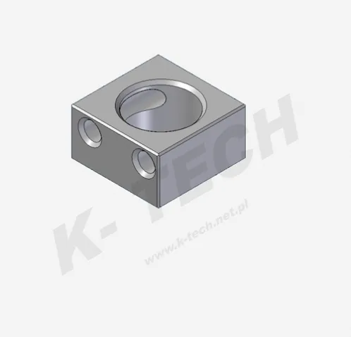

STECKO-Blöcke und Anschlüsse
Serienfertigung DN10 und DN12: gerade, niedrige und hohe Winkelblöcke, gefräst, Sicherungsblöcke.
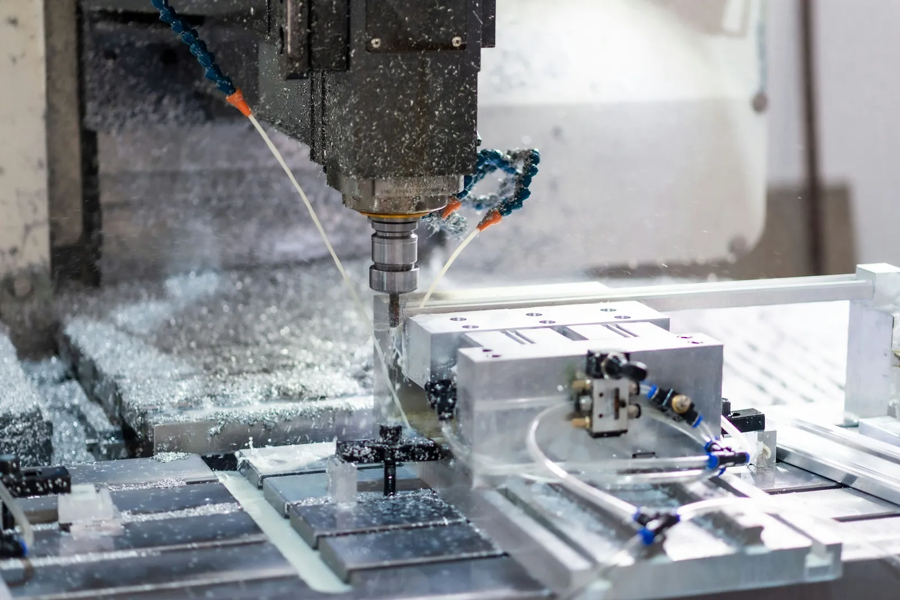
CNC-Bearbeitung in Żory, Polen: STECKO-Blöcke, Kolben, Führungsbuchsen, Dichtungen und Teile für Schreitausbau. In Serie oder nach Ihrer Zeichnung.
Zeichnung zur Anfrage sendenFünf Bereiche, in denen wir täglich arbeiten. Jedes Katalogteil fertigen wir in Serie oder passen es an Ihre Maße an.

Serienfertigung DN10 und DN12: gerade, niedrige und hohe Winkelblöcke, gefräst, Sicherungsblöcke.

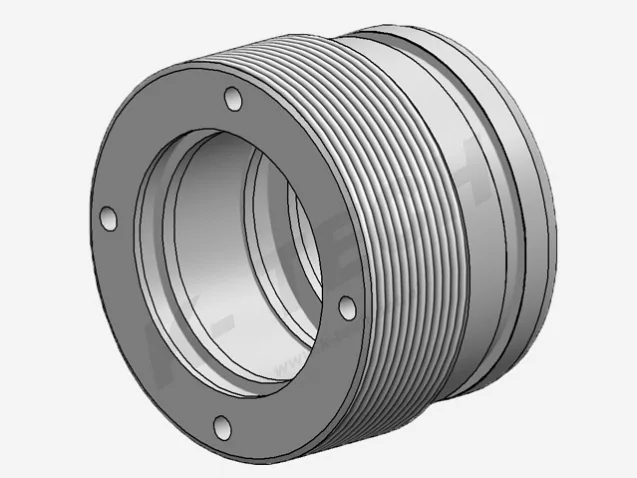


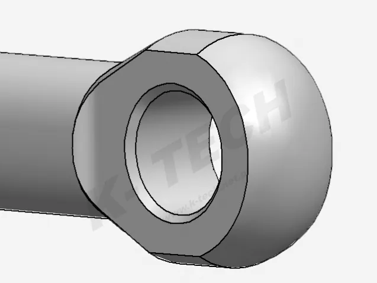
Kolben, Führungsbuchsen, Kolbenstangen und geteilte Ringe für die Leistungshydraulik, mit Gewinden und Dichtungsnuten.

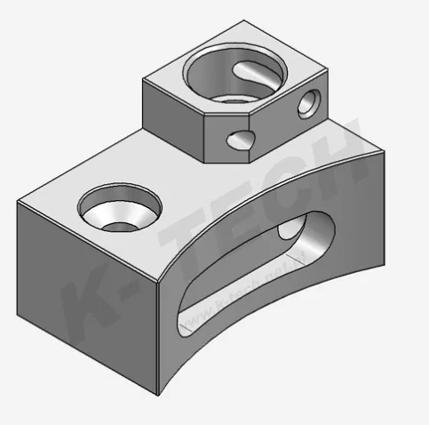
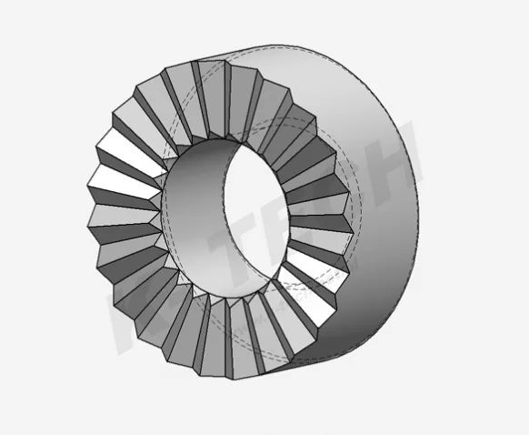


Anschlussleisten, Stufen-, Sonder- und Einschraubanschlüsse, Sitze für Überdruckventile, Kupplungen, Auflagen.


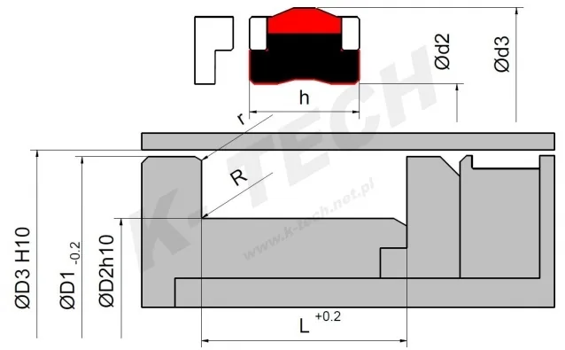
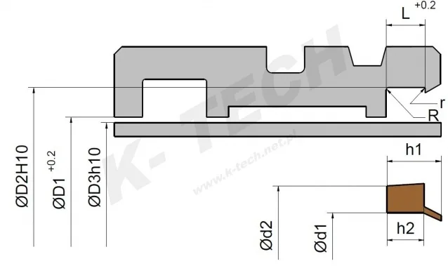

Kolbendichtungen DS, DSn, DZ, Stangendichtungen JSn, Stützringe PO, Abstreifer PZ und Polyamiddichtungen UP.

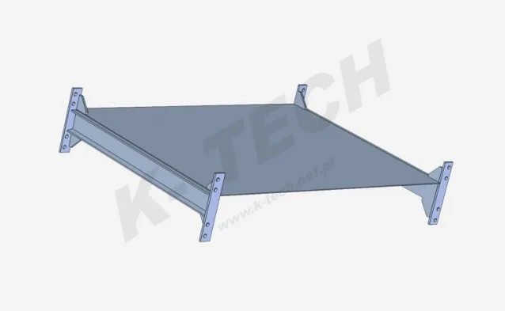


Umlenktrommeln, MIG-Schweißkonstruktionen, Schlosserarbeiten, Fertigung und Reparatur von Teilen für Schreitausbau.
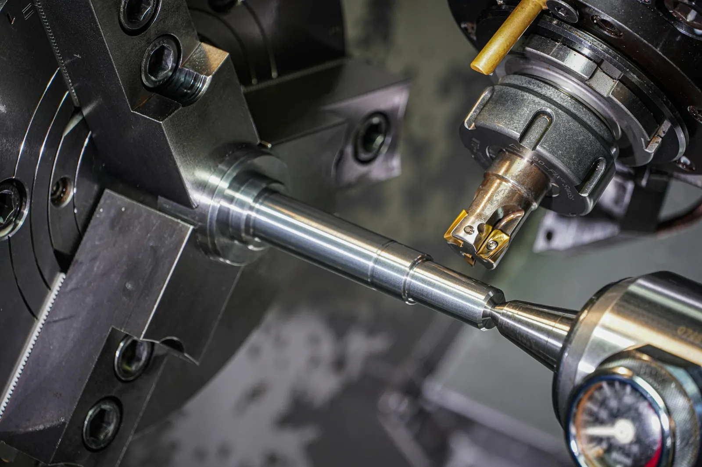
Fünf CNC-Maschinen und konventionelle Ausstattung. An den Verfahrwegen sehen Sie sofort, ob Ihr Teil passt.
Dazu Universaldrehmaschinen, konventionelle Fräsmaschinen und MIG-Schweißgeräte.
Ein Auszug aus dem Katalog. Vollständige Datenblätter mit Maßtabellen bleiben auf den Unterseiten.
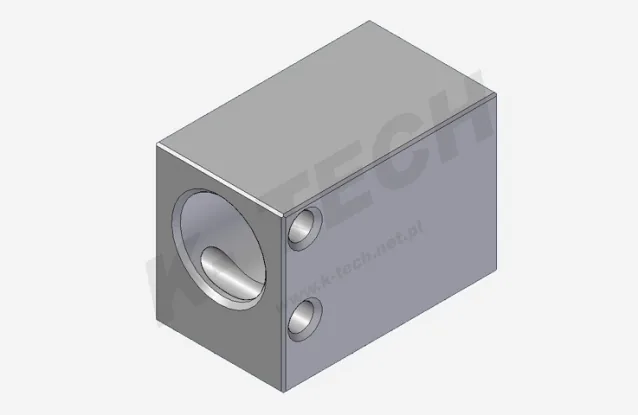


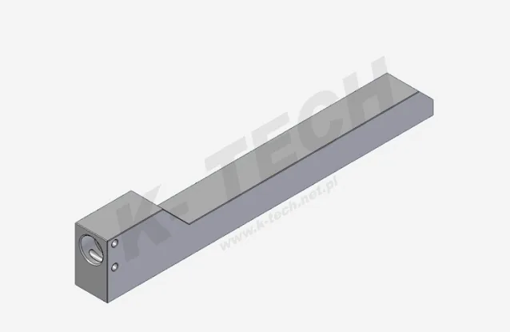
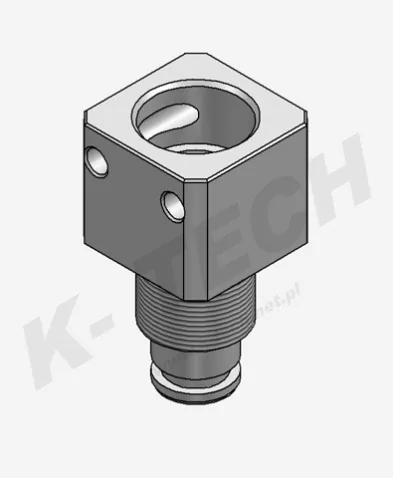


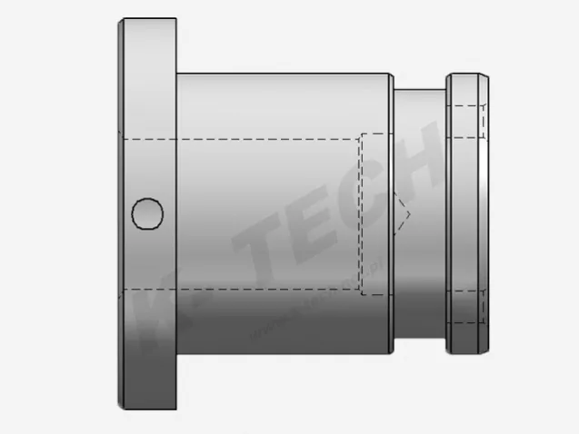


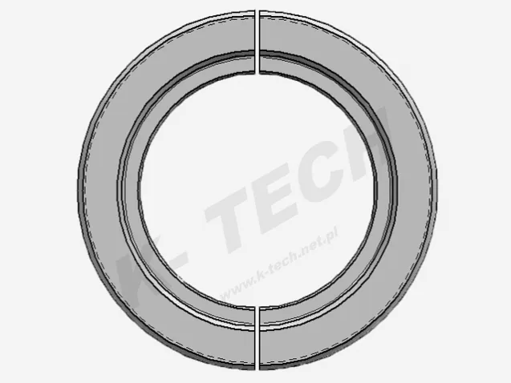

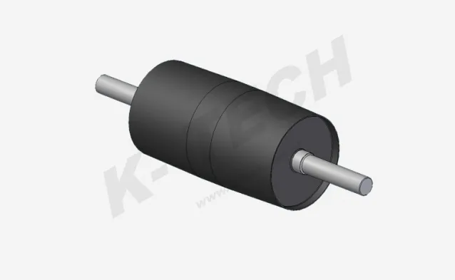
Am schnellsten kalkulieren wir mit Zeichnung, Stückzahl und Werkstoff.
Stammkunden bestellen über ihr Konto im Bestellportal. Konten richten wir auf Vertragsbasis ein. Bestellportal
Przedsiębiorstwo Wielobranżowe K-TECH Krzysztof Fojcik
ul. Boczna 8, 44-240 Żory
663 005 555 Tel. 32 750 12 95 · Fax 32 750 12 96 biuro@k-tech.net.pl
Wir bearbeiten Teile auf CNC- und Universalmaschinen, fertigen Komponenten der Leistungs- und Steuerhydraulik, produzieren und reparieren Teile für Schreitausbau und bieten Schlosser- und Schweißarbeiten.